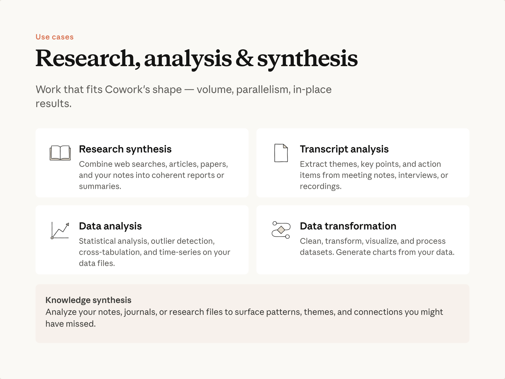

예상 소요 시간: 10분
학습 목표
이 레슨을 마치면 다음을 할 수 있습니다:
- Cowork의 접근 방식이 가장 효과적인 리서치 및 분석 작업 파악하기
- Cowork가 대규모로 도출할 수 있는 인사이트의 종류 설명하기
- 단순 요약이 아닌 핵심 신호를 찾기 위한 작업 구성하기
작업의 형태가 중요한 이유

채팅과 Cowork 모두 리서치 및 분석에 도움을 줄 수 있습니다. 차이는 각각에 맞는 작업의 형태에 있습니다.
채팅은 자료가 하나의 대화에 들어맞을 때 탁월합니다: 붙여넣고, 논의하고, 차례로 반복할 수 있습니다. Cowork는 작업이 다음 특성 중 하나 이상을 가질 때 더 적합합니다:
- 대용량. 붙여넣기에 너무 많은 파일이거나, 한 번에 처리하기에 너무 큰 파일들. Cowork는 파일을 있는 그대로 읽습니다—업로드 단계가 없고, 단일 채팅에 들어맞는 분량에 제한받지 않습니다.
- 병렬 처리. 작업이 "N개 항목에 동일한 분석 수행"인 경우, Cowork는 하나씩이 아닌 동시에 처리할 수 있습니다.
- 현장 연산. Cowork는 파일이 있는 위치에서 코드를 실행하고 결과를 디스크에 바로 저장할 수 있습니다. 업로드-재다운로드 과정이 없습니다. 출력 결과는 이미 필요한 곳에 있습니다.
이것들 중 어느 것도 채팅이 전혀 다룰 수 없는 것이 아닙니다—이것들은 작업의 형태가 이럴 때 Cowork가 보다 자연스럽게 처리하도록 만들어진 것들입니다.
이런 형태의 예시들
리서치 종합
메모, 기사, 논문, 저장된 자료를 일관된 보고서로 결합합니다. 대규모에서의 가치는 교차 참조에서 옵니다: Cowork는 모든 출처를 한 번에 보유하고, 순차적으로 읽을 때 놓칠 수 있는 연결고리를 찾아낼 수 있습니다.
"리서치 폴더의 모든 내용을 읽고 종합 보고서를 작성해줘. 출처들이 동의하는 부분은 어디야? 서로 모순되는 부분은? 단 하나의 출처만 주장하는 내용에 플래그를 달아줘."
트랜스크립트 분석
회의 메모, 인터뷰, 녹음 모음에서 주제, 결정사항, 실행 항목을 추출합니다. 몇 개의 트랜스크립트는 채팅에서도 충분히 처리됩니다. 대량의 경우 Cowork가 병렬로 읽는 것이 유리하며—특히 서로 의견이 다른 부분을 찾아내는 데 그렇습니다.
"이 폴더의 모든 트랜스크립트를 읽어줘. 대부분의 사람들이 동의한 것은 무엇이야? 누가 동의하지 않았고, 그 사람들의 공통점은 무엇이야?"
이상치들이 공통된 특성을 가진다는 사실을 알게 될 수도 있습니다. 그것이 대규모에서 발견되는 숨겨진 인사이트입니다.
데이터 분석
데이터 파일에 대한 통계 작업: 이상치 탐지, 교차 분석, 시계열. 데이터가 드라이브에 있을 때, Cowork는 현장에서 작업하고 결과를 필요한 곳에 바로 저장할 수 있습니다.
"이 파일의 각 고객에 대해 월별 사용량 변화를 계산해줘. 3개월 연속 하락한 계정에 플래그를 달고 같은 폴더에 요약을 저장해줘."
지식 종합
Cowork를 직접 쌓아온 메모, 일지, 프로젝트 파일에 연결하고 어떤 패턴을 발견하는지 물어보세요.
"지난 6개월간의 모든 프로젝트 메모를 읽어줘. 계속 등장하는 질문은 무엇이야? 한 프로젝트에서 내린 결정이 다른 프로젝트에서 내린 결정과 모순되는 것이 있어?"
프레이밍: 신호를 요청하세요
여기서 가장 유용한 프롬프트는 "모든 것을 요약해줘"가 아닙니다. 시간이 있다면 직접 답하고 싶은 질문이 바로 그것입니다. 질문을 날카롭게 만드는 몇 가지 예시:
- "이 트랜스크립트들을 요약해줘" → "대부분의 사람들이 동의한 것은 무엇이야? 누가 동의하지 않았고, 그 공통점은 무엇이야?"
- "이 데이터를 분석해줘" → "지난 3개월을 기준으로 위험한 계정은 어디야? 공통 패턴은 무엇이야?"
- "이 논문들을 검토해줘" → "이 논문들이 서로 모순되는 부분은 어디야? 어떤 주장이 가장 많은 단서를 필요로 해?"
날카로운 질문이 실행 가능한 결과를 가져옵니다.
실습해보기
미뤄두었던 입력 자료들—통화 메모 폴더, 데이터셋, 저장된 리서치 모음—을 떠올려보세요. Cowork에게 날카로운 질문을 던져보세요. 이상치는 무엇인가요? 모순은 무엇인가요? 무엇이 당신의 결정을 바꿀 수 있나요?
다음 내용
다음 모듈에서는: 권한, 사용량 관리, 그리고 실행 전 출력 결과 검토에 대해 다룹니다.
피드백
피드백을 공유해주세요 여기 .
저작권 및 라이선스
Copyright 2026 Anthropic. All rights reserved.